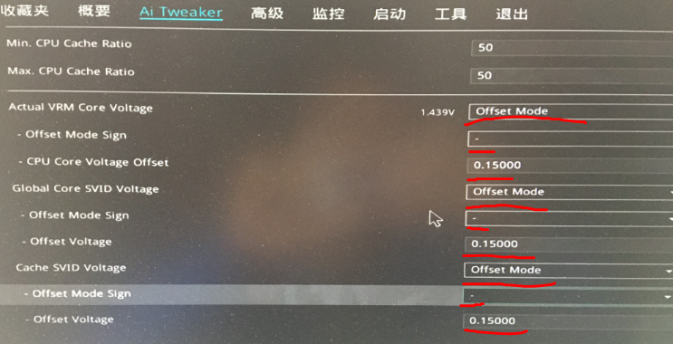
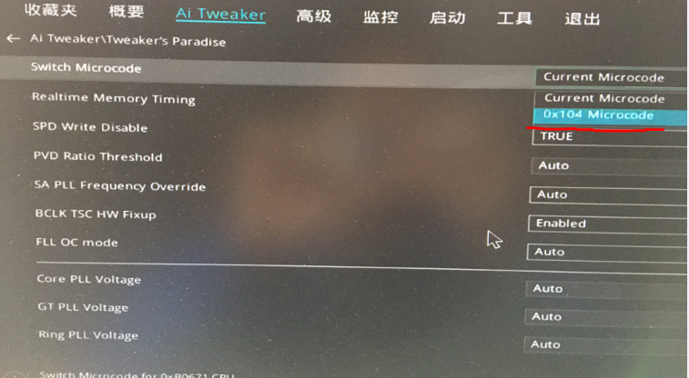

Unlock TDP or Power Limit on Motherboard
asus
Ai Tweaker -> Internal CPU Power Management

Ai Tweaker -> Actual VRM Core Voltage
Ai Tweaker -> Global Core SVID Voltage
Ai Tweaker -> Cache SVID Voltage

Ai Tweaker -> Tweaker’s Paradise
